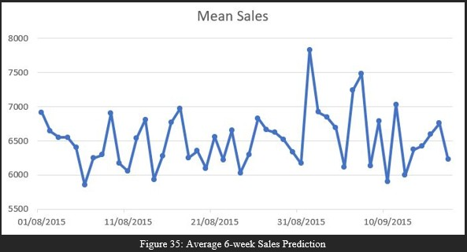

Crafting Insightful Narratives
- Analyze employee, customer, and campaign data to identify key patterns and trends
- Translate insights into compelling stories that connect brand messages to audience needs
- Visualize performance and personalize content through data-driven narratives
- Review results to refine strategies for continuous improvement and stronger engagement
- Create data-driven reports for senior leadership, combining insights and visuals to support key business narratives

Automating Workflows and Reporting
- Build scalable automated reports for stakeholders from junior associates to senior leadership
- Formulate KPIs and set schemas for data collection and storage
- Create data pipelines to extract data from BigQuery, transform it using Python and SQL, and load data into platforms like Google Sheets, Datorama, and Looker Studio
- Create dashboards on these platforms to gain actionable insights and monitor KPI performance

Query, Analyze, Visualize
- Extract meaningful data from the production database using advanced SQL queries to create Board Reports
- Analyse performance metrics to gain insights. Identified several key areas of business where performance could be improved
- Built intuitive and simplistic visuals to communicate complex data and convey data-driven insights
- Collaborate with stakeholders to tailor visuals and ensure insights are usable to support strategic decision-making
Automated billing tracker for the finance department
Overview
The tracker was built to help the GMP team and the finance department to keep track of their monthly invoicing requirement
Key Features
- Key information was extracted from 100s of invoices and formatted to be outputted onto a google sheets
- The tracker appropriates the invoices to the correct client through REGEXMATCH and VLOOKUP and appropriates the correct upcharge using SUMIFS and VLOOKUP with ARRAYFORMULA
- After the QA, The revenue gets extracted to store in the organisation's data warehouse
Outcomes
- Removed all billing inaccuracies
- Reduced the time taken to create and QA the tracker by 94% (45 Hours to 2 Hours)
- Invoices were quickly linked to clients which led to very quick invoicing to clients. This boosted client satisfaction with the whole process
ETL Pipelines for BI Team’s Data Warehouse
Overview
A data warehouse was created to serve as the single source of truth for the organisation's performance and reporting
Key Features
- Extraction of data from several sources including the Production database, Google sheets, Hubspot, People HR, and Google workspace
- The pipelines were built by integrating APIs, using SQL to extract data and Python to format data to align with the schemas in BQ Tables
- Several checks were also built inplace to whenever any pipeline edits were to pushed to the main branch, helping to maintain the data quality standards
Outcomes
- Reports within the organisation by various stakeholder ranging from the junior associates to COO became consistent
- Provided the Business Intelligence team more control over the data
- Monitoring of Major KPIs performance became accurate, more transparent, and consistent
Performance report on key business area
Overview
The report was produced to provide insights into the performance of the Croudies which is the contractor side of the business.
Key Features
- The report provided performance of croudies within each department of the business as well as for different client tiers (tiers were based on monthly revenue from clients)
- The report combined insights with visuals and strategies to achieve the target of 40% croudie usage within the organisation
- Key departments and clients were highlighted for the senior leadership and client directors to focus upon
Outcomes
- one of the strategies provided in the report was implemented within the organisation
- Croudie usage increased by 43% within 6 months and the overall target was achieved within a year
- The report also led to a new and improved automated reporting system for the network team (the team that deals with croudies)
Overview
The report was developed to aid the new global operations team with their reporting needs and tracking employee performance
Key Features
- The report integrates the data from planning sheets of all departments, data from the production database, and Client revenue data; with role-based access for departments and managers
- Data was extracted using Google API and cleaned and formatted using Python and SQL. Google API was also used to send alerts whenever any anomalies are found in the data.
- Report highlights the clients that are being overserviced and employees that are not completing their timekeeping and are being overworked.
Outcomes
- A unified view for the global operations team leading to increased transparency and accountability for performance of all departments.
- Continuous performance monitoring led to stopping of 9 clients being overserviced. This also reflected by increasing the company's overall gross margin by 1%.
- Reports also also functions as the tool to determine the amount of human resource a department can have. Department are now able to use this report when requesting for additional resources from the recruitment team.
Flow Shop Scheduling Problem
Overview
- The report addresses BMW’s challenge of optimizing the job sequence for 800 car manufacturing tasks across 60 machines using advanced scheduling algorithms.
- The objective is to minimize the total processing time (makespan) while handling constraints like job-specific processing times and urgent delivery requirements.
- It explores the computational complexity of the Permutation Flow Shop Problem (NP-hard) and provides algorithmic solutions including Random Search and Genetic Algorithm.
Key Features
- Data cleaning included outlier detection, missing value imputation, and correction of invalid processing times for accuracy.s
- Two metaheuristic algorithms—Random Search and Genetic Algorithm—were implemented and benchmarked across subsets of varying sizes (10, 50, 100 jobs).
- Performance of both algorithms was analyzed using metrics such as makespan, mean, standard deviation, and computation time, with sensitivity tests on key parameters.
Outcomes
- Random Search consistently produced lower minimum makespans across all subsets but with higher variability.
- Genetic Algorithm resulted in more stable outcomes (lower standard deviation) but was slower and sometimes less effective in reaching the lowest makespan.
- A final Random Search run on the full dataset (792 jobs) returned a best makespan of 51,939 in under one hour, showcasing its practical viability under time constraints.
What I Learned
- The importance of balancing Variance and Bias i.e. balancing trade-offs between accuracy and computational efficiency.
- Parameter tuning (e.g., population size, mutation probability) plays a crucial role in improving algorithm performance, especially for Genetic Algorithms.
- Effective data preprocessing and problem-specific insights are as vital as the choice of algorithm in operational research tasks like job scheduling.
Sales Forecasting for Drug Store Chain

Overview
- Conducted an exploratory and predictive analysis on sales data from 1,115 German drugstores to understand key drivers of sales performance.
- Analyzed the impact of promotions, competition, day of the week, holidays, and store types on daily sales using Python, Tableau, and machine learning models.
- Forecasted sales for a 6-week period using multiple predictive models, with XGBoost delivering the most accurate results.
Key Features
- Integrated and preprocessed multiple datasets ('Train', 'Test', 'Store') with engineered features such as ‘SalesPerCustomer’, ‘CompetitionOpen’, and ‘PromoOpen’.
- Visualized patterns in sales using Tableau and Python (matplotlib/seaborn) to uncover insights related to promotions, competition, holidays, and weekly trends.
- Applied various machine learning models including Linear Regression, Decision Trees, Random Forest, Neural Networks, and XGBoost to compare prediction performance.
Outcomes
- XGBoost outperformed other models in predicting sales, achieving the lowest RMSPE on both training and validation sets.
- Discovered that promotions significantly increased sales, while new competition caused a decline, indicating low customer loyalty.
- Identified Monday as the highest sales day and Sunday as the weakest, with insights suggesting window shopping behavior on Sundays.
What I Learned
- The importance of thorough data preprocessing, especially when dealing with missing values and skewed distributions.
- How feature engineering and model selection significantly influence forecasting accuracy in real-world retail datasets.
- The value of combining visual insights with predictive analytics for actionable business strategies in marketing and inventory planning.